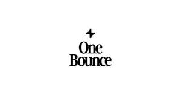

Trade Mark Journal No.2025/024 13 June 2025
UK00004210038 27 May 2025 (25)

- Class 25
- Clothing; Jackets [clothing]; Knitwear [clothing]; Ready-to-wear clothing; Woolen clothing; Headbands [clothing]; Headbands for clothing; Gloves [clothing]; Gloves as clothing; Clothes; Jerseys [clothing]; Shorts [clothing]; Leather clothing; Clothing of leather; Hoods [clothing]; Windproof clothing; Wristbands [clothing]; Embroidered clothing; Waterproof clothing; Casual clothing; Visors [clothing]; Jackets being sports clothing; Jackets (Stuff -) [clothing]; Playsuits [clothing]; Clothing for leisure wear; Leisure clothing; Clothing for sports; Sports clothing; Athletic clothing; Tops [clothing]; Weatherproof clothing; Beach clothing; Thermal clothing; Men's clothing; Clothes for sports; Sports garments; Articles of sports clothing; Sports clothing [other than golf gloves]; Clothes for sport; Sports shirts; Sports jackets; Sports jerseys and breeches for sports; Sports wear; Sports jerseys; Sports bras; Sports vests; Sports pants; Sports bibs; Moisture-wicking sports shirts; Sports socks; Sport shirts; Golf clothing, other than gloves; Sports singlets; Sports headgear [other than helmets]; Moisture-wicking sports bras; Dance clothing; Water-resistant clothing; Articles of clothing; Moisture-wicking sports pants; Clothing for children; Sportswear; Sports caps; Tennis shirts; Tennis dresses; Tennis wear; Tennis shorts; Tennis skirts; Tennis socks; Tennis sweatbands; Jogging sets [clothing]; Jogging bottoms [clothing]; Bottoms [clothing]; Rainproof clothing; Gloves for apparel; Headwear; Visors [headwear]; Visors being headwear; Bonnets [headwear]; Caps [headwear]; Caps being headwear; Leather headwear; Peaked headwear; Sun visors [headwear]; Headgear; Headgear for wear; Beanie hats; Fashion hats; Hats; Sports caps and hats; Beanies; Baseball caps and hats; Baseball hats; Cap visors; Headbands; Shorts; Gym shorts; Jogging pants; Yoga pants; Jogging outfits; Exercise wear; Yoga shirts; Gymwear; Yoga socks; Clothing for gymnastics; Casualwear; Menswear; Leisurewear; Outerwear; Men's underwear; Rainwear; Garments for protecting clothing; Tracksuits.
Padel Links Limited